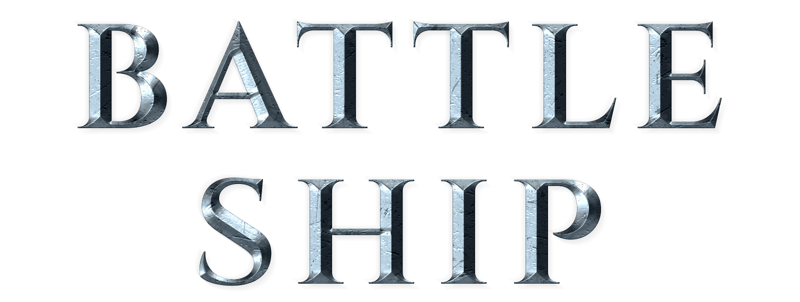

Los hombres viejos declaran las guerras,
pero son los jóvenes las que las luchas
y los que mueren (Herbert Hoover)
El éxito no es el final, el error no es fatal:
es el coraje para continuar
lo que cuenta (Winston Churchill)
No debes luchar muy a menudo con un enemigo,
o le enseñarás todo tu
arte bélico (Napoleón Bonaparte)
Aquel que tiene mil amigos, no le sobra ni uno.
Aquel que tiene un enemigo,
lo encontrará en todas partes (Ali ibn-Abi-Talib)
Numero intentos: